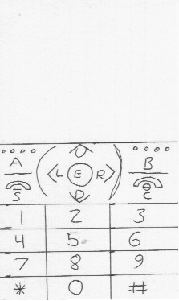

The initial task was to "Send Bob a message." After completing this task, users were asked to "Send Bob an emoji." No further instructions were given. There were multiple ways to get into the chat box with "Bob", and users were allowed to use which ever way they figured out.
The interface used was a mock version of the itel it5020. (See Below)
Initial tests came back very negative. The user had a very difficult time completing the first task. Much frustration and annoyance was given by the user. Certain elements were said to be "bad design" and "stupid." This pain points have been realized and will be fixed for the next test.
| Pain Point | Solution |
|---|---|
| Emoji button is not communicated well | Button used for emoji will be changed to the original location of the send button |
| Iconography of send button is not well made | The send button icon will be removed and become an "assumed button" (a button that does not have an onscreen cue. You must know that the button will do what it is meant to.). |
| Main Menu Scroll button iconography was not conveyed well | The spacing on the scroll buttons from the menu title will be increased |
| User location is not conveyed well enough | A simple menu bar will be added to show user location |
Revisions to the interface were done to fix the pain points realized from the first tests. A new subject was given the new interface and the same task. After a slight learning curve with navigating the interface, the subject quickly completed the task. While the speed was somewhat slow, it was indicative of a first-time user. The subject understood exactly which buttons to press to move about the interface.